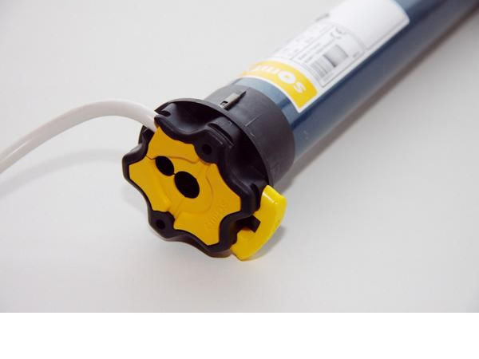
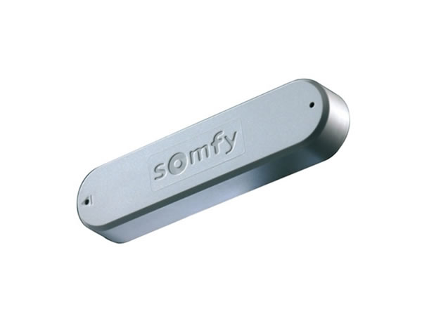
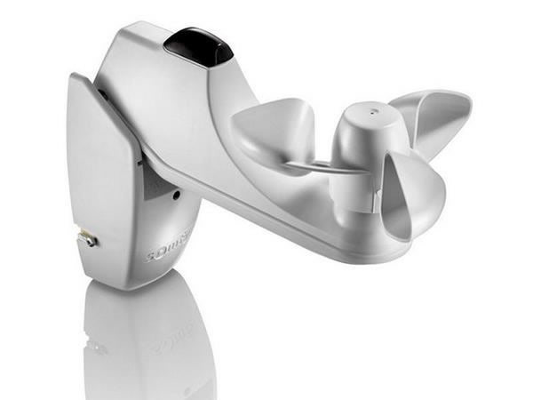
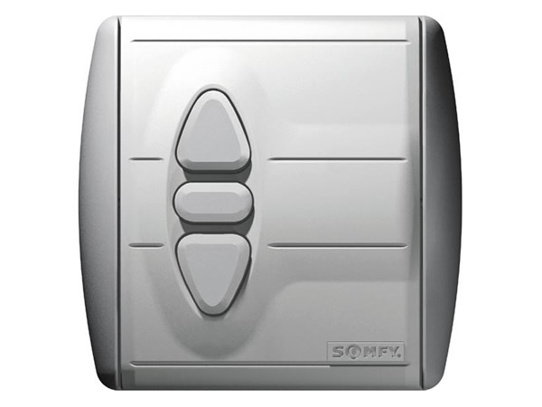

Выберите любой тип маркизы или перголы и получите по нему консультацию нашего специалиста
Маркизы открытого типа
Заказать сейчасМаркизы открытого типа. Обычные выдвижные локтевые маркизы с ручным или электроприводом, которые позволяют закрывать от солнца террасу до 72 м.кв. Используются для ресторанов, кафе и частных домов.
Кассетные маркизы
Заказать сейчасКассетные маркизы. Механизм и ткань при закрытии убирается в герметичным короб, который осенью зимой или в непогоду защищает все комплектующие, локти ткань от воздействия внешней среды .
Фасадные маркизы
Заказать сейчасФасадные маркизы. Устанавливаются на окна для защиты от солнца. Их основная функция защитить от солнца окно и украсить фасад магазина или каф с нанесением логотипа заведения.

Вертикальные маркизы
Заказать сейчасВертикальные маркизы. Защищают от ветра, солнца и дождя беседки и веранды. Устанавливаются в проёмы, опускаются и поднимаются ручным или электроприводом. Закрывают террасу или веранду от посторонних глаз, ветра, косого дождя и низко стоящего солнца.

Телескопические маркизы
Заказать сейчасТелескопические маркизы. Это выдвижные маркизы с телескопическими руками. Только они могут обеспечить выдвижение маркизы до 5 метров. Максимальный размер 18*5 м., 90 кв.м. Поставляются только с электроприводом.
Корзинные маркизы
Заказать сейчасКорзинные маркизы. Служат украшением и защитой от солнца окон магазинов ресторанов и кафе. Как декоративный элемент привлекает потенциальных покупателей, на который можно нанести символику или логотип заведения.

Перголы
Заказать сейчасПерголы. Это каркасные конструкции, которые имеют сдвижной тент. Они позволяют закрывать летние террасы на весь летний сезон, надежно закрывая веранды от солнца и дождей. В крышу, при желании, возможно интегрировать светодиодное освещение, управляться вся конструкция может с помощью пульта дистанционного управления. Выдвижные перголы устанавливаются на летних верандах для кафе и террасах частных домов, коттеджей таунхаусов, позволяют перекрывать практически неограниченные площади.

Маркизы для зимнего сада
Заказать сейчасМаркизы для зимнего сада. Устанавливаются поверх остекления и преграждают путь солнечным лучам, снижая нагрев внутри зимнего сада.

Тентовые конструкции
Заказать сейчасТентовые конструкции. Стационарные конструкции разных размеров и архитектурных форм.

Ткани
Ткани для маркиз производится из 100% акрилового волокна. Они не подвержены воздействию солнечных лучей, устойчивы к выгоранию и максимально долго сохраняют свой первоначальный вид. Благодаря специальному покрытию они обладают одновременно двумя свойствами воздухопроводность и водонепроницаемость.


Автоматика: пульты, двигатели и солнечно-ветровые датчики
Любое изделие, маркизу, перголу или вертикальный экран можно оснастить автоматическим электроприводом. Большие размеры поставляются только с электроприводом.
-

Внутривальный электродвигатель приводит в движение маркизу
-

Пульт дистанционного управления управляем мотором
-

Ветровой датчик 3Д срабатывает на колебания маркизы от ветра и даёт команду двигателю закрыть маркизу, воизбежании поломки от ветровой нагрузки
-

Лопастной ветровой датчик определяет скорость ветра и также в случае превышения заданной величины с помощью мотора складывает маркизу
-

Настенный переключатель. Может быть беспроводным. Часто его берут дополнительно, так как пульт может затерятся

Маркизы и навесы для террасы
Маркизы и навесы для террасы позволяют сделать веранду частного дома , кафе или ресторана современной и уютной и удобной. Они защитят отдыхающих от солнца, дождя и при необходимости от посторонних глаз.